CAmatic Piscine
Windows desktop system for swimming pool operations, memberships, cards, payments, scheduling and reports.
Main Features
- Subscriber and association management
- Membership renewal, pause and recovery workflows
- Access cards, devices and time slots
- Statistics and printable reports
Technologies Used
C#.NET Framework 4.8WPFSQL ServerMVVMCrystal Reports
How The Project Works
Desktop frontend with service and core modules.
Screenshot

Links
GitHub: https://github.com/tayebzitouni/Algematic_pisicne_Myversion
Live demo: Desktop application